La primera mesa
Los comienzos fueron simples y honestos: quesos, huevos, dulces y productos de la chacra ofrecidos en una mesa al costado de la ruta.
Quesos artesanales y tradición familiar
La Quesería Rural lleva el sabor de la chacra a la mesa: quesos, miel, picadas y una historia contada con el corazón.
Descubrir productosNuestra historia
La Quesería Rural es una historia de familia, trabajo y amor por el campo. Nació con una mesa sencilla en la ruta, afuera de La Portera de la Chacra, junto a la querida vaca Mochita y a los primeros clientes que confiaron en el sabor de casa.
Durante siete años se produjo y se vendió en la misma chacra, practicando la filosofía de kilómetro 0: donde producimos, vendemos. Cada queso llevaba paciencia, leche fresca y el orgullo de hacer algo propio.
Hoy esa esencia sigue intacta, pero con una mirada nueva: llevar el verdadero sabor rural a Punta del Este, sin perder la calidez de la familia ni la dedicación artesanal.
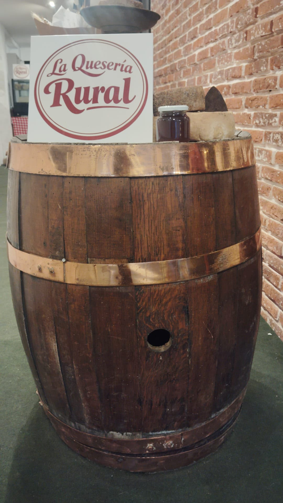
Cómo empezó todo
Primero fue una mesa en la ruta, después un contenedor y finalmente el local en pleno Gorlero. Cada paso tuvo esfuerzo, cambios importantes y una decisión clara: llegar a más corazones con productos rurales de verdad.
Los comienzos fueron simples y honestos: quesos, huevos, dulces y productos de la chacra ofrecidos en una mesa al costado de la ruta.

La querida vaca Mochita forma parte de esa memoria rural: animales mansitos, cuidados y sentidos como parte de la familia.

Afuera de La Portera de la Chacra se empezó a compartir una forma de producir cercana, natural y con identidad propia.

Durante años se vendió donde se producía, creando un vínculo directo con vecinos, clientes y visitantes de la zona.
Ese día se tomó la decisión de cambiar, crecer y convertirse en La Quesería Rural: una marca con raíz de campo y una visión más fresca, joven y divertida.
El contenedor en la ruta fue el puente entre la chacra y más clientes. Una etapa intensa que preparó el salto hacia Punta del Este.
En Juan Gorlero y Las Gaviotas, al lado de Mundo de la Pizza, la quesería invita a degustar, escuchar la historia y llevarse un pedacito del campo.
Momentos reales
La Quesería Rural no creció de un día para el otro. Creció con mesas armadas temprano, con ferias de domingo, con el contenedor lleno de vida y con esa mezcla de cansancio y alegría que solo conocen quienes empujan un sueño familiar.

Hubo una mesa que quedó en la memoria: quesos al sol, flores secas, mantel de campo y la sensación clara de estar creciendo. El contenedor vidriado fue un paso más, una prueba de que el esfuerzo podía transformarse en un lugar con alma.
De una mesa simple a un rincón donde la gente se quedaba a mirar, probar y preguntar.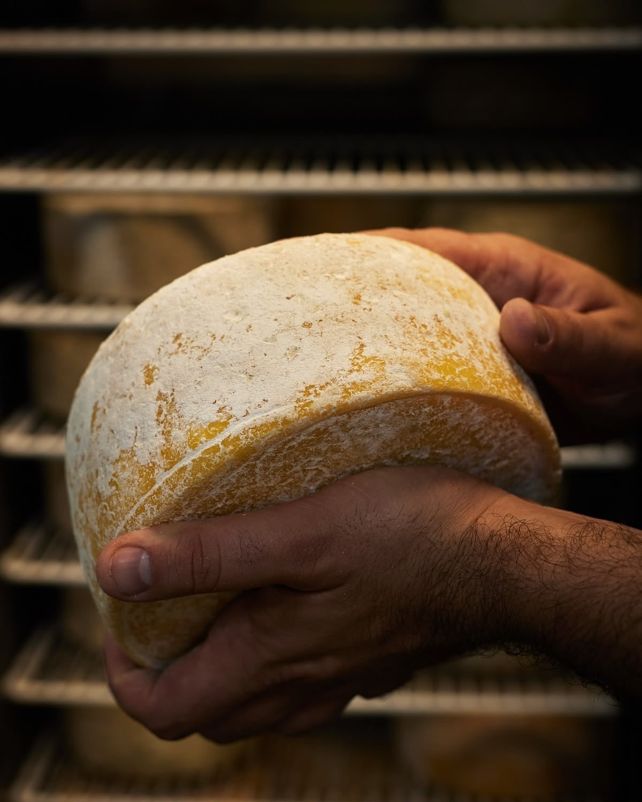
Detrás de cada tabla hay tiempo, oficio y cuidado. Esa cercanía es parte del sabor: no es solo vender queso, es preparar algo para que cada persona se sienta bienvenida.

La feria es importantísima: ahí se conversa, se prueba, se vuelve a ver a la gente de siempre y se conoce a quienes llegan por primera vez. Cada domingo se arma la mesa como una invitación a compartir.
La carpa también tiene su encanto: mantel a cuadros, quesos listos, productos de la chacra y el campo entrando por las ventanas. Es una forma simple y honesta de decir acá estamos.

La Navidad en el contenedor tuvo de todo: luces, productos, apuro, alegría y un calor tremendo. De esos días que se sufren un poco, se recuerdan mucho y después se cuentan con una sonrisa.
Nuestros productos
Cada pieza se trabaja con leche fresca, maduración cuidada y respeto por los tiempos del queso. Hay opciones suaves para todos los días y piezas añejas para quienes buscan sabores profundos.
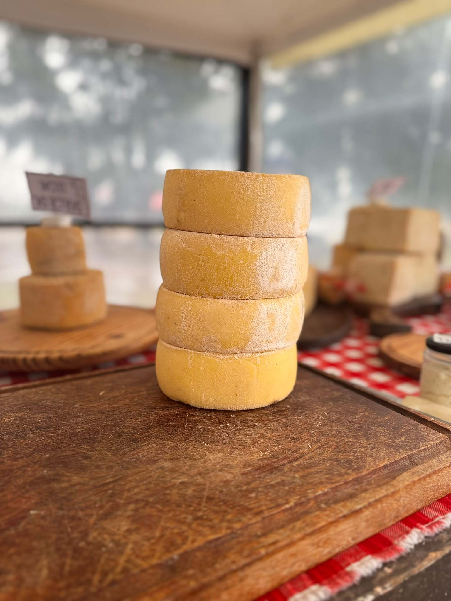
Blandos
Suaves, frescos y cremosos. Ideales para sándwiches, meriendas, recetas caseras y tablas familiares.

Semiduros
Quesos con más cuerpo, aroma equilibrado y textura firme. Funcionan perfecto para rallar, cortar o acompañar picadas.

Duros
Madurados con paciencia para lograr intensidad, textura seca y un sabor persistente que se disfruta en pequeñas porciones.

Añejos
Piezas especiales, de sabor profundo y carácter marcado, pensadas para quienes aman los quesos con historia.
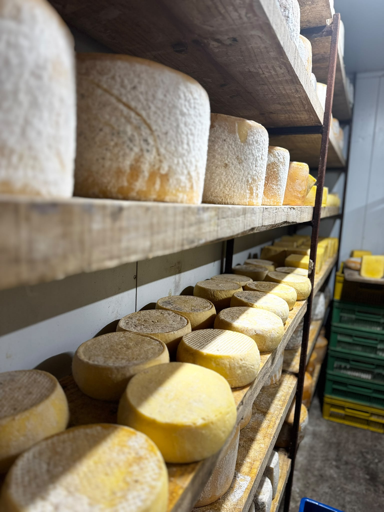

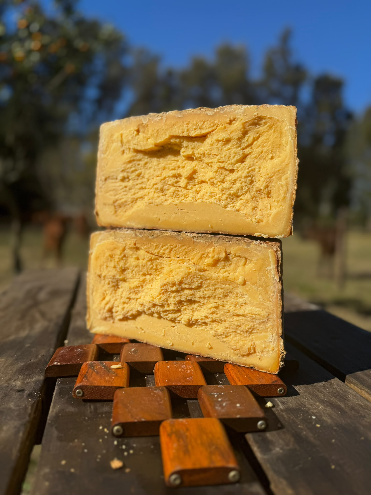


Producción natural
La miel nace de colmenas cuidadas en un entorno natural. Es pura, fresca y con ese aroma de campo que combina perfecto con quesos semiduros, añejos y panes rústicos.
La misma filosofía se repite en cada producto: hacer poco a poco, con respeto por la tierra y por quienes después lo llevan a su mesa.
Sabores para compartir
La propuesta también suma picadas con quesos, salames, bondiola, panes y productos seleccionados. Son sabores pensados para compartir sin apuro, como se disfruta en el campo.
En el local se invita a probar, a conversar y a conocer la experiencia detrás de cada producto. La decoración rural, la degustación y el chocolate caliente hacen que la visita tenga algo especial.
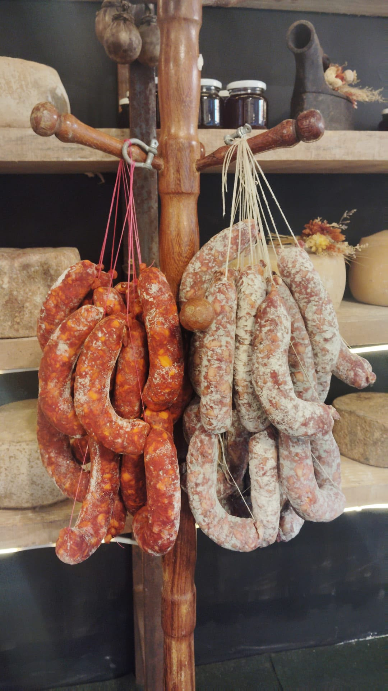
Picadas por kilo
Las picadas se preparan en el momento, con quesos y chacinados de la casa. Podés pedir una bandejita chica, llevar por kilo o elegir la cantidad que quieras para disfrutar donde estés.
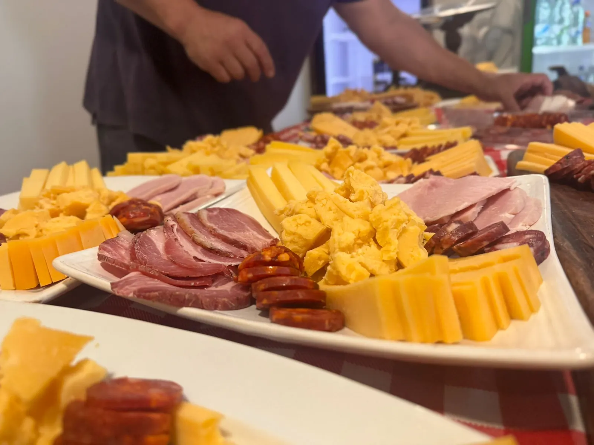
Hechas en el momento
Pedí desde una porción chica para el camino hasta una picada más grande para compartir. La armamos en el momento, con lo que más te guste.
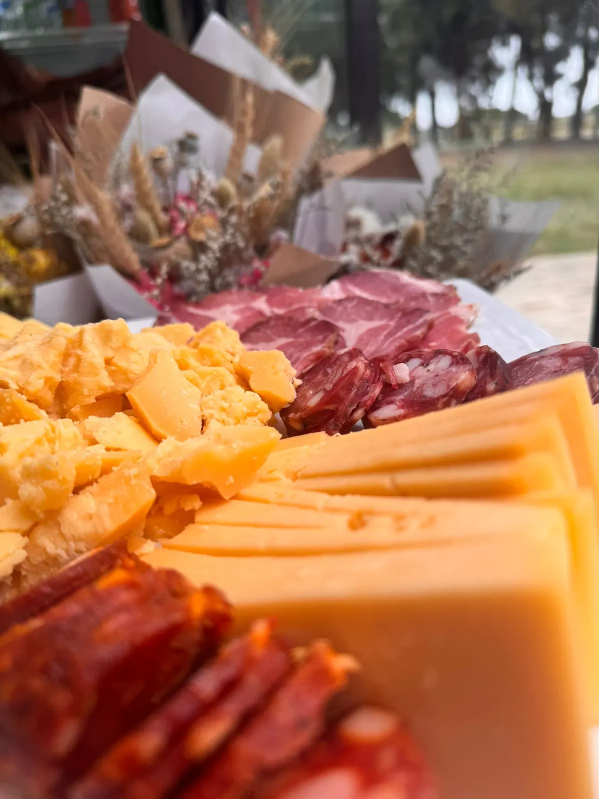
Sabor rural en Punta del Este
Mientras disfrutás el paisaje de Punta del Este, pasá por Gorlero y levantá tu picada recién preparada.
Nuestra esencia
Las vacas rotan por distintos suelos, dando tiempo a que el pasto se recupere y el campo crezca con más fuerza.
La historia empezó produciendo y vendiendo en la misma chacra, con clientes vecinos y una relación directa.
Detrás de La Quesería Rural hay una familia que pone cuerpo, tiempo y corazón en cada nuevo comienzo.
Galería
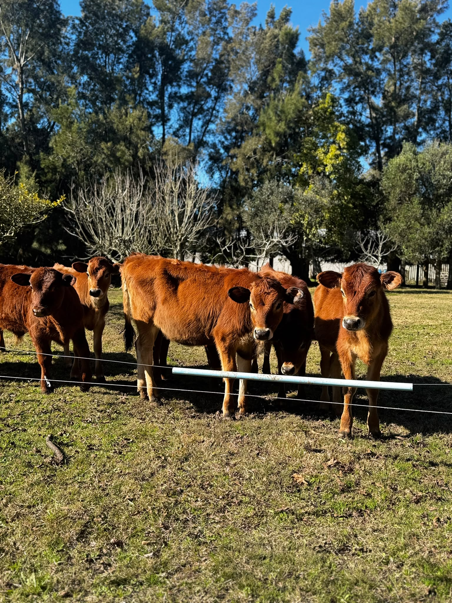


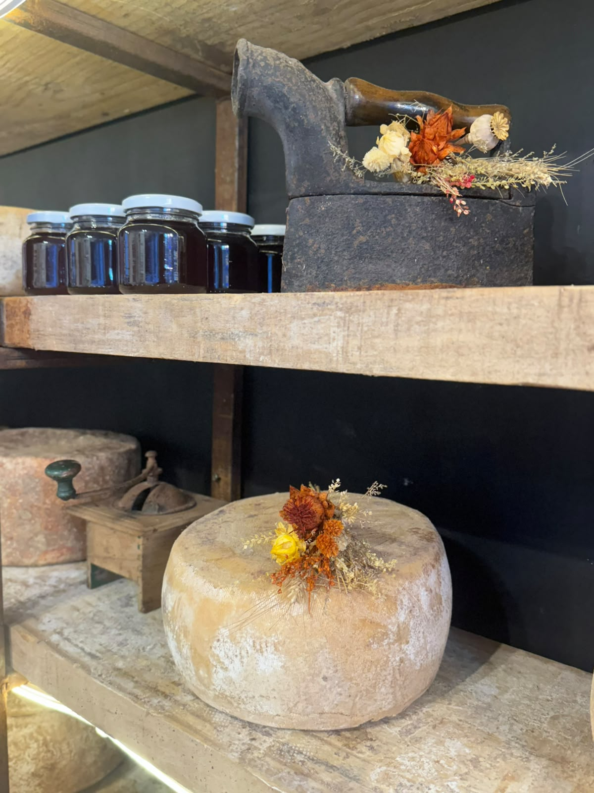
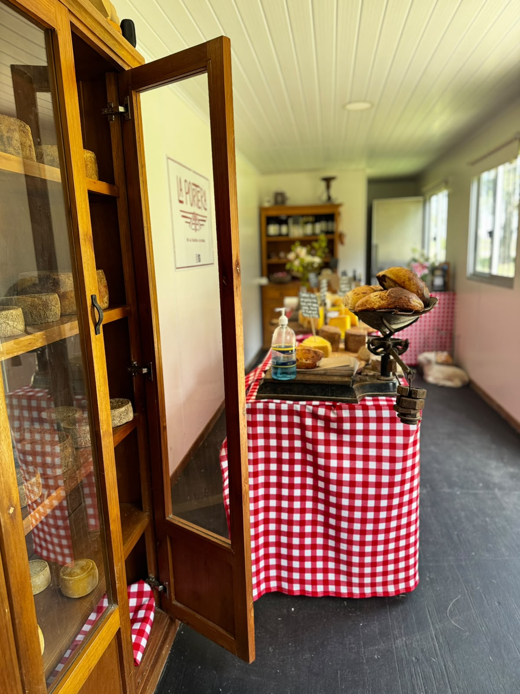
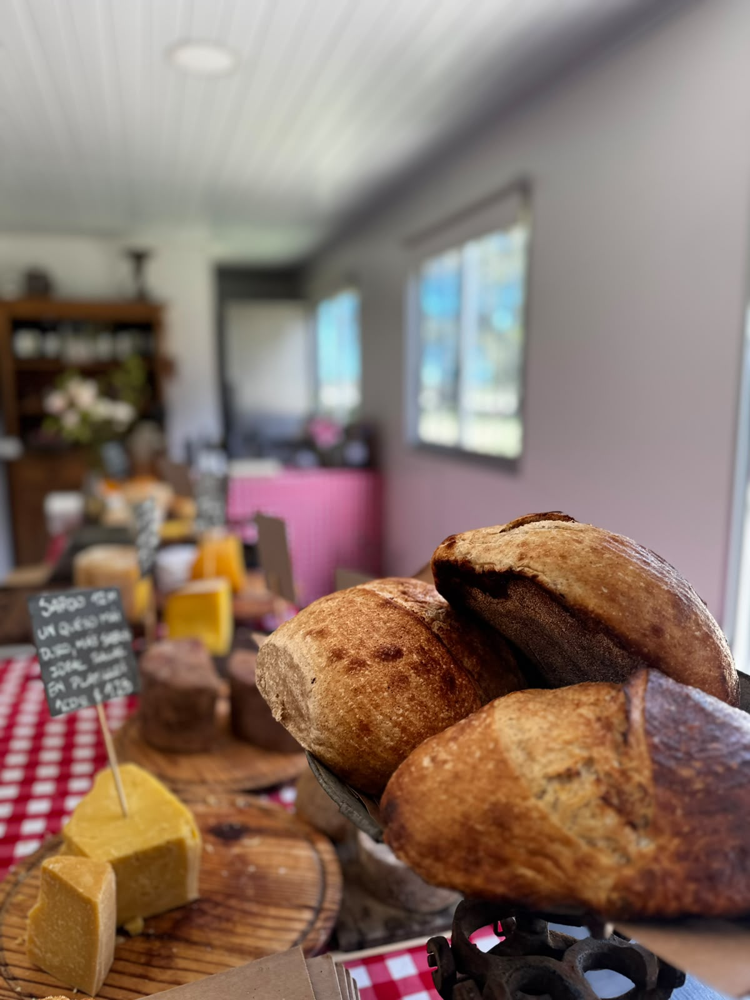


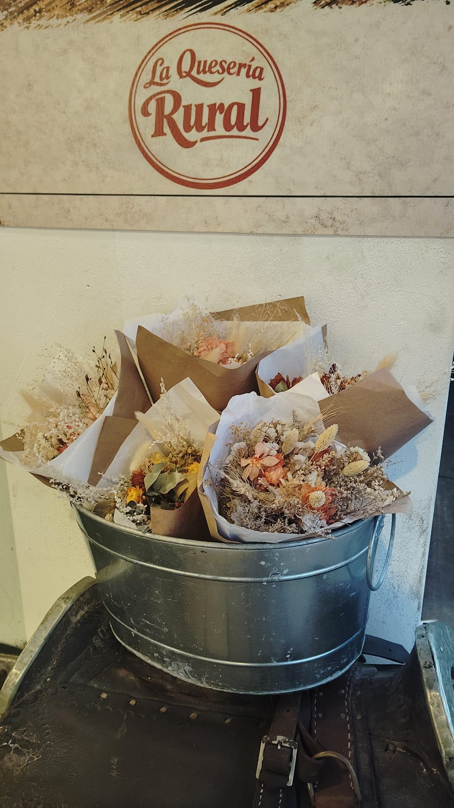
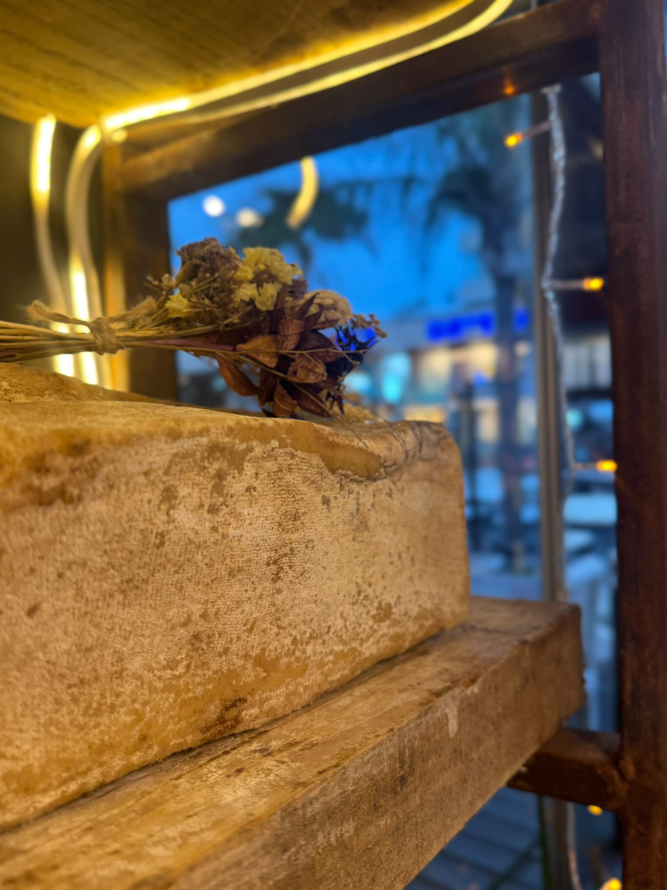
Encontranos
Hoy el sabor rural llega al centro de Punta del Este sin perder su origen: el tambo, la producción y la vida de campo siguen en la chacra.
Local: Gorlero y la 29 (calle Las Gaviotas), Punta del Este.
WhatsApp: 092 882 562
Instagram: @laqueseriarural
Tambo y producción: Camino Eguzquiza, La Barra.
Lunes, martes, jueves, viernes, sábado y domingo11:00 a 18:30
MiércolesCerrado
Y si el día viene lindo, el tiempo acompaña y la gente también, nos quedamos un ratito más.Feria de Cantegril: todos los domingos de 10 a 13.
Experiencia: Degustación, productos artesanales y chocolate caliente con cada compra.
Acercate a probar quesos artesanales, miel y picadas hechas con dedicación, tradición y corazón rural. También pasá por nuestro Instagram: compartimos novedades y momentos de la quesería.